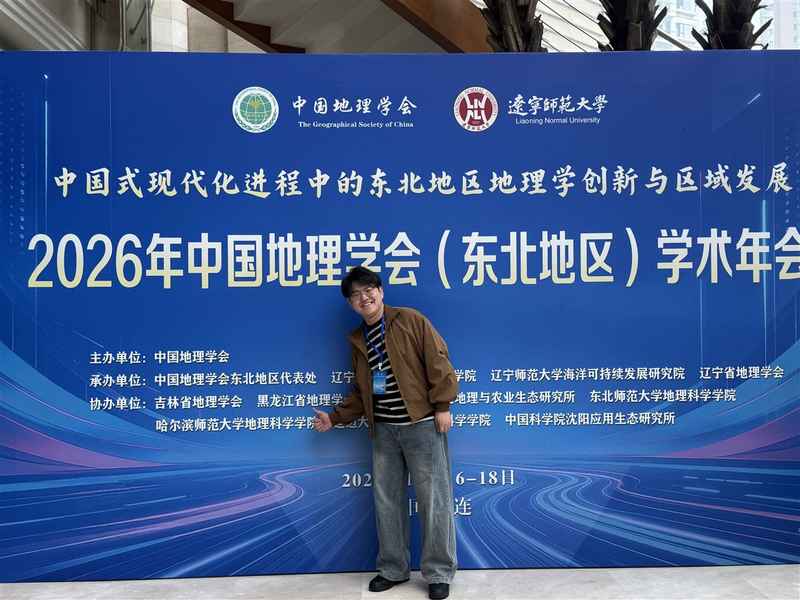
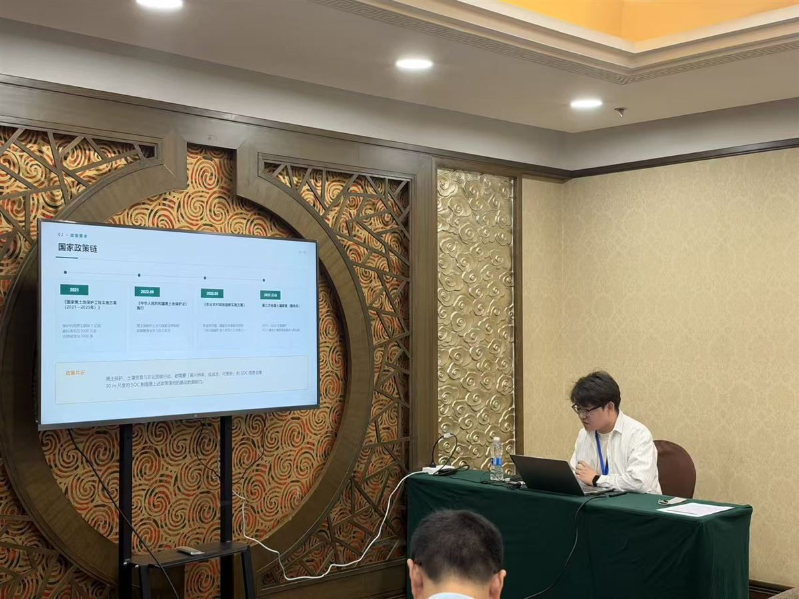

2026年中国地理学会（东北地区）学术年会
汇报主题
面向中国耕地 30 m 土壤有机碳制图的多尺度分支自注意力时空融合网络（SMART-Net）
围绕现有 SOC 制图产品分辨率粗（90–250 m）、多尺度等权融合精度受限的瓶颈，报告系统介绍了 SMART-Net 的设计与应用：以多尺寸卷积分支自注意力动态加权取代等权拼接，与 GRU 时序分支耦合实现时空融合，并以 L2 弹性正则防止尺度退化。基于全国 3,599 个耕地样本、17 维特征的 11 组递进实验表明，模型交叉验证 R² 达 0.7300，注意力权重随平原、山地、谷地等地貌情境自适应调整；产出的 30 m 全国耕地 SOC 分布图与像元级不确定度图在空间纹理与预测精度上全面领先 90 m 与 250 m 同类产品，可为耕地质量评估、黑土保护与碳汇计量提供高分辨率数据支撑。